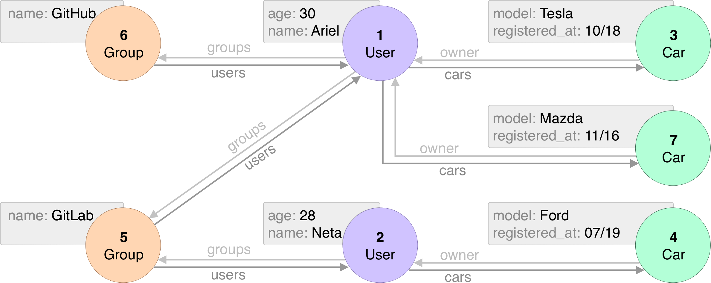

<!DOCTYPE html>
<html lang="en">
  <head>
    <meta charset="utf-8" />
    <meta name="viewport" content="width=device-width, initial-scale=1.0, maximum-scale=1.0, user-scalable=no" />

    <title>Using MongoDB as a graphDB</title>
    <link rel="shortcut icon" href="./favicon.ico" />
    <link rel="stylesheet" href="./dist/reset.css" />
    <link rel="stylesheet" href="./dist/reveal.css" />
    <link rel="stylesheet" href="./dist/theme/league.css" id="theme" />
    <link rel="stylesheet" href="./css/highlight/base16/zenburn.css" />


  </head>
  <body>
    <div class="reveal">
      <div class="slides"><section  data-markdown><script type="text/template">

# Hi

Is this working?
</script></section><section  data-markdown><script type="text/template">
## Let's talk about graphs


</script></section><section  data-markdown><script type="text/template">
## No, not that kind 

In computer science when we say Graph we mean dots and dashes

.... . .-.. .-.. --- / .-- --- .-. .-.. -..

Oh, wait that's the morse code. Let's try this again, shall we?
</script></section><section ><section data-markdown><script type="text/template">
## This is a Graph (in CS)


</script></section><section data-markdown><script type="text/template">

</script></section></section><section  data-markdown><script type="text/template">
## Dots and Arrows

What is a Graph?

- In mathematics, a Graph is a set of vertices and edges.
- That's fancy speak for dots and arrows.
- We have dots representing a "thing" and arrows that show how one thing is
related to another. 
- In the world of mathematics, Jane Doe is still related to John Doe even if
they broke up - she now has a "hates" relation with John Doe.
</script></section><section ><section data-markdown><script type="text/template">
## Why should you care?

> Spoiler alert: You shouldn't. It's not worth it. Leave while you can.
We're going into a rabbit hole.
</script></section><section data-markdown><script type="text/template">
### JK, Graphs make "some" things easier

Let's take a look at a few examples.

Btw this whole talk is totally not a rip off from MongoDB's official blog

[MongoDB Graph Database](https://www.mongodb.com/databases/mongodb-graph-database)
</script></section></section><section ><section data-markdown><script type="text/template">
## Social Network

- Let's model a social network using traditional data modeling
- A naive implementation will just require one type of collection

```yaml
User:
- Name: String
- Friends: Array of strings
```

- In a relational db you might need a join table to represent m-n relations,
but in MongoDB we can store the list of friends as an array embedded in the
user object.
</script></section><section data-markdown><script type="text/template">
- Let's add some sample data to our db that looks like this 

```json
[
  {
    "name": "Bob",
    "friends": ["Alice", "Kate"]
  },
  {
    "name": "Alice",
    "friends": ["Bob", "John"]
  },
  {
    "name": "Kate",
    "friends": ["Bob"]
  },
  {
    "name": "John",
    "friends": ["Alice"]
  }
]

```

- It looks like an adjacency list, doesn't it? Totally a coincidence /s.
</script></section><section data-markdown><script type="text/template">
- One of the common features in a social network is to show you friend suggestions.
- It would also help the user to know why a friend is being suggested - maybe they have
common friends or common interests.
- Let's try to find friend suggestions for Kate. She only has 1 friend - Bob. Who else
has Bob in their friends list?

```js
db.people.find({ friends: "Bob", name: { $ne: "Kate" }})
```
</script></section><section data-markdown><script type="text/template">
```json
{
  _id: ObjectId("63cb73f1bb0776fa5f0fd497"),
  name: 'Alice',
  friends: [
    'Bob',
    'John'
  ]
}
```

- That was simple enough. Alice is also friends with John so maybe Kate knows John too
- How can we query the data in a way John also shows up? And moreover we might want to
know if the person is a 2nd connection (single level of mutual friend) or 3rd (2 levels).
</script></section></section><section ><section data-markdown><script type="text/template">
## Introducing $graphLookup

- We need graphs. 
- Graph DBs are designed to answer these kind of questions.
- When a relationship between 2 entities is as important as the fields on the entity, it
is a good sign that a graph structure will make your queries simpler.
- In our previous example the relation "Friends" has a special meaning (maybe in life too).
- Querying data based on relationships is what Graph DBs specialize in.
</script></section><section data-markdown><script type="text/template">
Fortunately for us, we don't need to install a graph DB for simple queries like the
one above.

MongoDB has an aggreation operator called `$graphLookup`.
</script></section><section data-markdown><script type="text/template">
```js
db.people.aggregate([
  { $match: { name: "Kate", } },
  {
    $graphLookup: {
      from: "people",
      startWith: "$friends",
      connectFromField: "friends",
      connectToField: "name",
      as: "network",
      depthField: "connectionLevel",
      maxDepth: 2,
      restrictSearchWithMatch: { name: { $ne: "Kate" } }
    },
  },
  {
    $project: { name: 1, network: 1 }
  }
])
```

- Who are the 2nd and 3rd connections of Kate?
- Pretty self-explanatory right? I think we're done here. 

</script></section><section data-markdown><script type="text/template">
Alright, let's break it down

- We start with Kate. `$match.name: "Kate"`
- GraphLookup operator starts a recursive search from all the documents
from the previous output. In our case it's only one document.
  - The loop starts with the value in `startsWith` and looks for that value
  in the colleciton in `from` field.
  - A graph path is constructed with value in fromField and toField.
  - Traversal happens until the specified depth is reached or we run out of edges.
- TL;DR Mongo performs a DFS.
</script></section></section><section  data-markdown><script type="text/template">

## Another Graph

<div style="background:#fff">
  
</div>

<small>Image courtesy: [Entgo](https://entgo.io)</small>
</script></section><section  data-markdown><script type="text/template">
## That's all I know TBH

Hope you've got some idea to include $graphLookup in your projects.
If you have any questions ask ~ChatGPT~ me.

ashwin@partnerchampion.com
https://linkedin.com/in/ashwins93
</script></section></div>
    </div>

    <script src="./dist/reveal.js"></script>

    <script src="./plugin/markdown/markdown.js"></script>
    <script src="./plugin/highlight/highlight.js"></script>
    <script src="./plugin/zoom/zoom.js"></script>
    <script src="./plugin/notes/notes.js"></script>
    <script src="./plugin/math/math.js"></script>
    <script>
      function extend() {
        var target = {};
        for (var i = 0; i < arguments.length; i++) {
          var source = arguments[i];
          for (var key in source) {
            if (source.hasOwnProperty(key)) {
              target[key] = source[key];
            }
          }
        }
        return target;
      }

      // default options to init reveal.js
      var defaultOptions = {
        controls: true,
        progress: true,
        history: true,
        center: true,
        transition: 'default', // none/fade/slide/convex/concave/zoom
        slideNumber: true,
        plugins: [
          RevealMarkdown,
          RevealHighlight,
          RevealZoom,
          RevealNotes,
          RevealMath
        ]
      };

      // options from URL query string
      var queryOptions = Reveal().getQueryHash() || {};

      var options = extend(defaultOptions, {}, queryOptions);
    </script>


    <script>
      Reveal.initialize(options);
    </script>
  </body>
</html>
